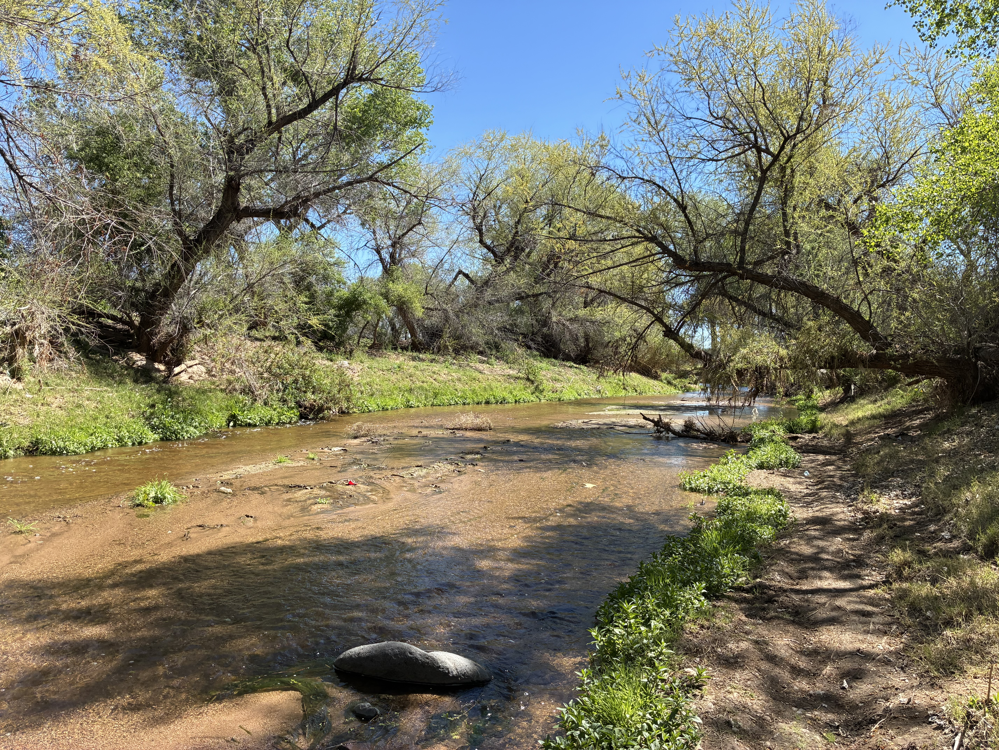

Amazon River Plume Expedition
Research expedition investigating marine biogeochemistry and microbial processes in the Amazon River plume.
From open-ocean research cruises to coastal and freshwater environments, fieldwork has been a central part of my scientific experience. Explore the expeditions and field campaigns that have shaped my research.
Research expedition investigating marine biogeochemistry and microbial processes in the Amazon River plume.

Oceanographic fieldwork examining fine-scale biogeochemical variability in the Mediterranean Sea.

Field sampling and research in coastal marine environments.

Investigating the distribution and transformation of synthetic organophosphorus compounds in an effluent-fed river ecosystem.